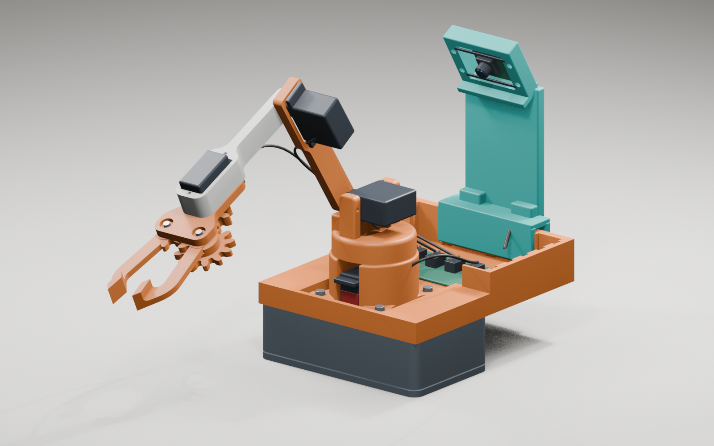

ASSEMBLY STUDY / V1
拼起来，就是这样。
先看原来的机械臂，再看新支架放在哪里。动画可以随时暂停，细节也可以单独放大。
试装方案
VISUAL PREVIEW
VISUAL PREVIEW
底座 / 大臂小臂新增支架舵机示意件
已按系统的“减少动态效果”偏好打开静态步骤。仍可由你手动切换动画。
数字装配演示 · 非实拍
键盘：空格播放 / 暂停，← → 前后 1 秒，Home 回开头，F 全屏。也可使用视频自带控件。
不看动画，也能顺着装起来
下面是理解结构的阅读顺序。真正装配时，还需要检查螺丝、舵机零位和实际间隙。
换个角度，看清楚。
重点看：支架与底座的关系、镜头朝向和机械臂活动空间。

整机效果
放大原图 ↗从整体看机械臂和后置摄像头支架的相对位置。
哪些是真的模型？
塑料结构使用本地机械臂 STL 和新增支架模型。舵机、XIAO ESP32S3 Sense、镜头及线材是帮助理解位置的示意件，不是厂家精确 CAD。叠板厚度、连接位置和排线方向仍需实测确认。
看懂位置，不等于装配已验证
- 这是教学展示顺序，不是机器人可执行的运动轨迹。
- 未完成实体打印、装配与全行程碰撞测试。
- 原接线方案保持不变；播放此页面不会驱动机械臂。
想自己转动查看？用 Blender 打开完整场景。